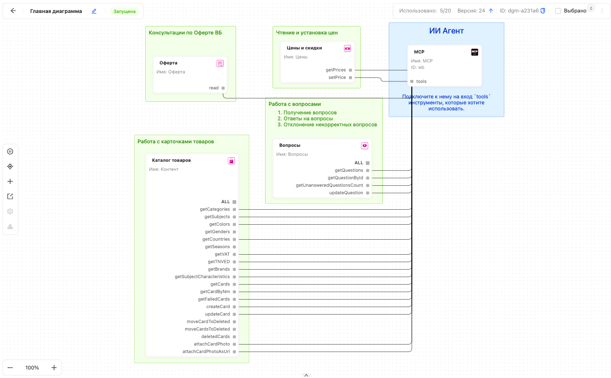

О платформе
MarketAut — платформа для подключения ИИ к внешним сервисам и управления бизнес-процессами через визуальные диаграммы.

Автоматизируйте процессы и подключайте ИИ-агентов без написания кода, установки дополнительных приложений и настройки сложной инфраструктуры.
ИИ для работы с MarketAut
MarketAut может работать с языковыми моделями через протокол MCP. Благодаря этому модель может не только отвечать на вопросы, но и обращаться к подключенным инструментам и данным MarketAut.
Варианты языковых моделей и ИИ - ассистентов
Ниже собраны популярные языковые модели и ИИ-ассистенты, которые могут быть релевантны для пользователей MarketAut.
Что дает подключение к MarketAut
После подключения языковая модель сможет использовать инструменты MarketAut, доступные пользователю согласно его правам. Например, получать данные, работать с подключенными сервисами и выполнять действия через инструменты платформы.
Текущий статус
На текущий момент подключение к MarketAut доступно для ChatGPT и Claude. Остальные языковые модели из списка рассматриваются как потенциальные варианты для дальнейшей проверки.
Где найти документацию и как связаться с поддержкой